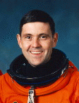

Lyndon B. Johnson Space Center
Houston, Texas 77058
|
National Aeronautics and Space Administration Lyndon B. Johnson Space Center Houston, Texas 77058 |
 |
Biographical Data |
||
Robert D. Cabana (COLONEL, U.S. MARINE CORPS, RET.)
DIRECTOR, KENNEDY SPACE CENTER
PERSONAL DATA: Born in Minneapolis, Minnesota. Married to the former Nancy Joan Shimer of Cortland, New York. They have three children, Jeffrey, Christopher and Sarah. He enjoys mud runs, cycling, sailing and flying.
EDUCATION: Graduated from Washburn High School, Minneapolis, Minnesota, in 1967; received a Bachelor of Science degree in Mathematics from the United States Naval Academy in 1971.
ORGANIZATIONS: Fellow in the Society of Experimental Test Pilots; Associate Fellow, American Institute of Aeronautics and Astronautics and member of the Association of Space Explorers.
SPECIAL HONORS: Inducted into the Astronaut Hall of Fame, 2008; Daughters of the American Revolution Award for the top Marine to complete naval flight training, 1976; U.S. Naval Test Pilot School Distinguished Graduate Award; De La Vaulx Medal presented by the Federation Aeronautique Internationale, 1994; Defense Distinguished Service Medal; Defense Superior Service Medal; Legion of Merit; Distinguished Flying Cross; Defense Meritorious Service Medal; Meritorious Service Medal; National Intelligence Medal of Achievement; two NASA Distinguished Service Medals; two NASA Medals for Outstanding Leadership; two NASA Exceptional Service Medals and four NASA Space Flight Medals.
EXPERIENCE: After graduation from the Naval Academy, Cabana attended the Basic School in Quantico, Virginia, and completed naval flight officer training in Pensacola, Florida, in 1972. He served as an A-6 bombardier/navigator with Marine Air Wings in Cherry Point, North Carolina and Iwakuni, Japan. He returned to Pensacola in 1975 for pilot training and was designated a naval aviator in September 1976. He was then assigned to the Second Marine Aircraft Wing in Cherry Point, North Carolina, where he flew A-6 Intruders. He graduated from the U.S. Naval Test Pilot School in 1981 and served at the Naval Air Test Center in Patuxent River, Maryland, as the A-6 Program Manager, X-29 Advanced Technology Demonstrator Project Officer and as a test pilot for flight systems and ordnance separation testing on A-6 and A-4 series aircraft. Prior to his selection as an astronaut candidate, he served as the Assistant Operations Officer of Marine Aircraft Group Twelve in Iwakuni, Japan. Cabana retired from the U.S. Marine Corps in August 2000.
He has logged more than 7,000 hours in 48 different kinds of aircraft.
NASA EXPERIENCE: Selected by NASA in June 1985, Cabana completed initial astronaut training in July 1986, qualifying for assignment as a pilot on future space shuttle flight crews. His initial assignment was as the Astronaut Office Space Shuttle Flight Software Coordinator until November 1986. At that time, he was assigned as the Deputy Chief of Aircraft Operations for the Johnson Space Center, where he served for two and a half years. He then served as the lead astronaut in the Shuttle Avionics Integration Laboratory (SAIL), where the orbiter's flight software was tested prior to flight. Cabana has served as a Capsule Communicator (CAPCOM) in Mission Control during space shuttle missions and as Chief of Astronaut Appearances. Prior to his assignment to command STS-88, Cabana served for three years as the Chief of NASA’s Astronaut Office. Following STS-88, Cabana served as the Deputy Director of Flight Crew Operations. After joining the International Space Station Program in October 1999, Cabana served as Manager for International Operations. From August 2001 to September 2002, he served as Director, Human Space Flight Programs, Russia. As NASA’s lead representative to the Russian Aviation and Space Agency (Rosaviakosmos) and its contractors, he provided oversight of all human space flight operations, logistics and technical functions, including NASA’s mission operations in Korolev and crew training at the Gagarin Cosmonaut Training Center in Star City. Upon his return to Houston, Cabana was assigned briefly as the Deputy Manager of the International Space Station Program. From November 2002 to March 2004, he served as Director of the Flight Crew Operations Directorate and was responsible for directing the day-to-day activities of the directorate, including the Astronaut Corps and aircraft operations at Ellington Field. He was then assigned as Deputy Director of the Johnson Space Center, where he served for three and a half years. He next served as the Director of the Stennis Space Center in Mississippi.
A veteran of four space flights, Cabana has logged more than 910 hours in space. He served as pilot on STS-41 (October 6 to October 10, 1990) and STS-53 (December 2 to December 9, 1992) and was mission commander on STS-65 (July 8 to July 23, 1994) and STS-88 (December 4 to December 15, 1998), the first International Space Station assembly mission. Cabana currently serves as the Director of Kennedy Space Center, Florida.
SPACEFLIGHT EXPERIENCE: STS-41 Discovery launched on October 6, 1990, from Kennedy Space Center and landed at Edwards Air Force Base, California, on October 10, 1990. During 66 orbits of the Earth, the five-person crew successfully deployed the Ulysses spacecraft, starting the interplanetary probe on its four-year journey, via Jupiter, to investigate the polar regions of the Sun; operated the Shuttle Solar Backscatter Ultraviolet instrument (SSBUV) to map atmospheric ozone levels; activated a controlled “fire in space” experiment (the Solid Surface Combustion Experiment (SSCE) and conducted numerous other middeck experiments involving radiation measurements, polymer membrane production and microgravity effects on plants.
STS-53 Discovery launched from Kennedy Space Center on December 2, 1992. The crew of five deployed the classified Department of Defense payload DOD-1 and then performed several Military-Man-in-Space and NASA experiments. After completing 115 orbits of the Earth in 175 hours, Discovery landed at Edwards Air Force Base on December 9, 1992.
STS-65 Columbia launched from Kennedy Space Center on July 8, 1994, returning to Florida on July 23, 1994. The crew conducted the second International Microgravity Laboratory (IML-2) mission, utilizing the long Spacelab module in the payload bay. The flight consisted of 82 experiments from 15 countries and six space agencies from around the world. During the record‑setting 15-day flight, the crew conducted experiments that focused on materials and life sciences research in a microgravity environment, paving the way for future operations and cooperation aboard the International Space Station. The mission was accomplished in 236 orbits of the Earth in 353 hours and 55 minutes.
STS-88 Endeavour (December 4 through December 15, 1998) was the first International Space Station assembly mission. During the 12-day mission, Unity, the U.S.-built node, was mated with Zarya, the Russian-built Functional Cargo Block (FGB). Two crew members performed three spacewalks to connect umbilicals and attach tools/hardware in the assembly and outfitting of the station. Additionally, the crew performed the initial activation and first ingress of the space station, preparing it for future assembly missions and full-time occupation. The crew also performed IMAX Cargo Bay Camera (ICBC) operations and deployed two satellites, Mighty Sat 1, built by the U.S. Air Force Phillips Laboratory, and SAC-A, the first successful launch of an Argentine satellite. The mission was accomplished in 185 Earth orbits in 283 hours and 18 minutes.
JULY 2014